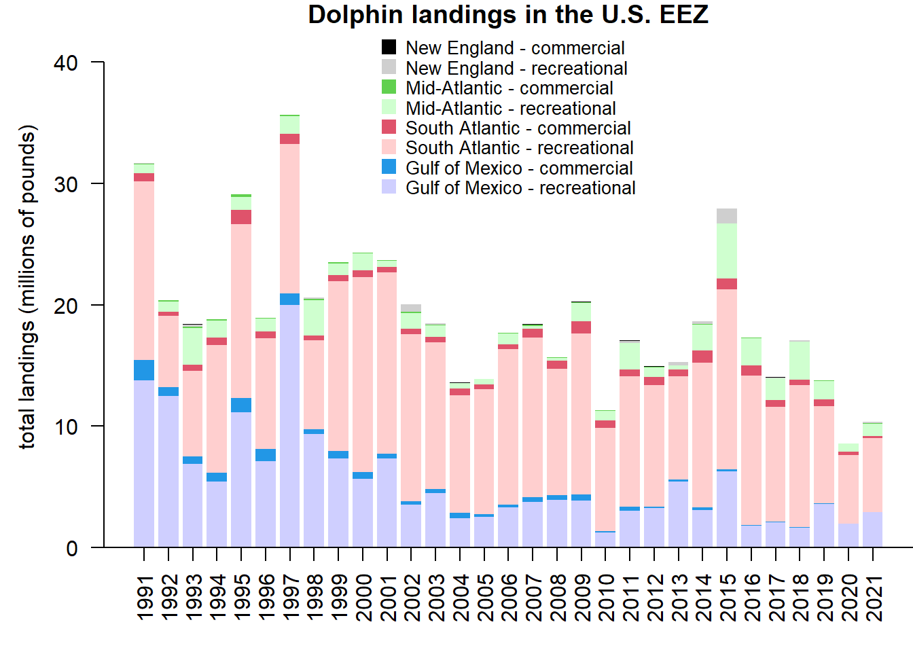
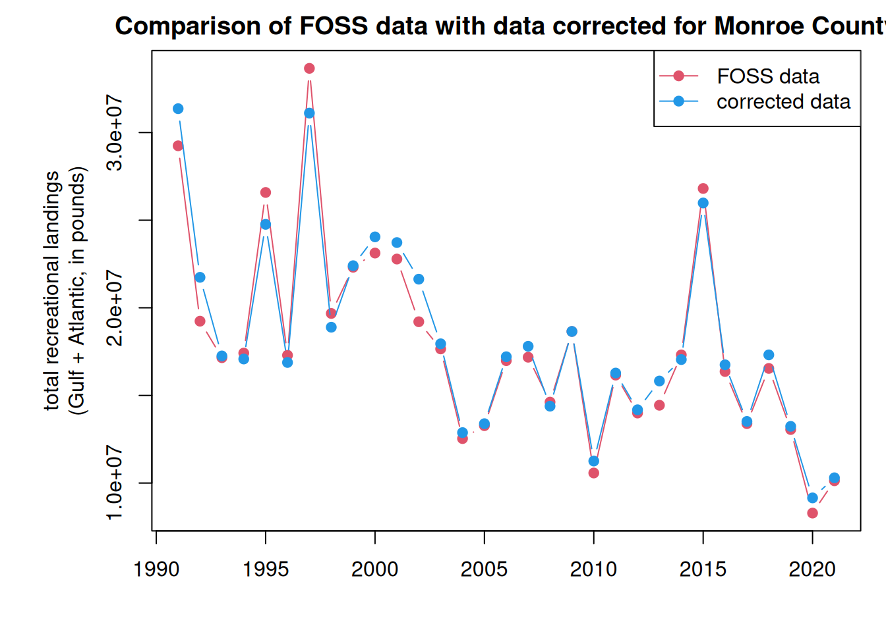
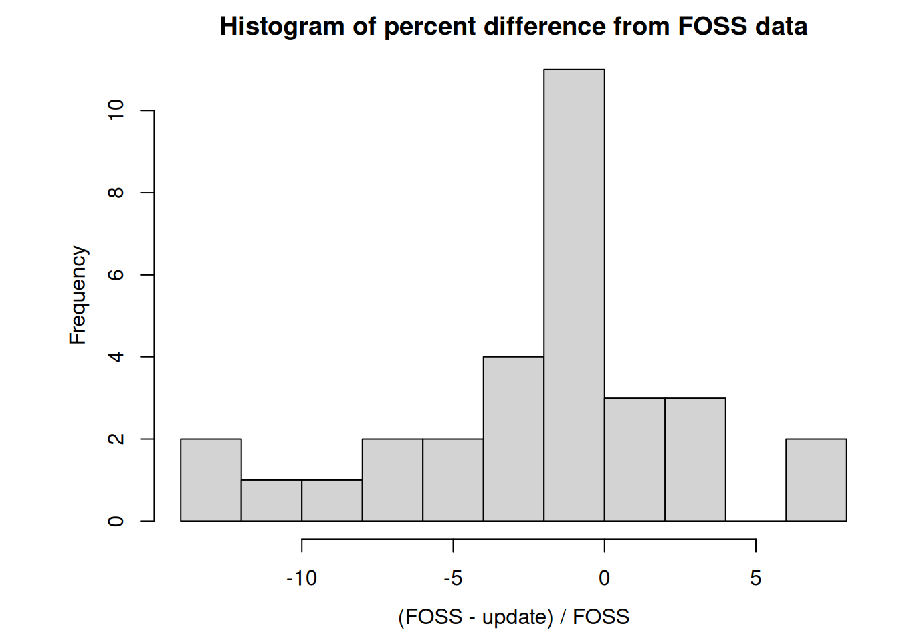

Here we will explore commercial and recreational landings data accessed through the FOSS (Fisheries One Stop Shop) data portal. The advantage of this portal is that commercial and recreational data are available side-by-side in the same units (pounds landed).
2.1 Data access and upload
Data are downloaded download data from the NOAA Fisheries FOSS site. For the Data Set, we choose both commercial and recreational. For the Years, we select all years from 1980 to the present. For NMFS Region, we select the “NMFS Regions” button and then select the Gulf, South Atlantic, Middle Atlantic and New England from the box. For the Species, we select “Dolphinfish” and “Dolphinfish**.” For Report Format, we choose TOTALS BY YEAR/REGION. Hitting the “RUN REPORT” button then generates the data needed for the subsequent analysis, which can be downloaded as a .csv file under the “Actions” button.
We then read in the data file and clean it for analysis (removing the commas from the numbers so that R recognizes the values as numbers). We output the file header to make sure it was read in and that the numbers were converted correctly.
# clear workspacerm(list =ls())# read in data filed <-read.table("data/FOSS_landings.csv", header = T, sep =",", skip =1)head(d)
We then summarize the landings (in pounds) by year, sector, and region. The result is a new data frame with each row representing a year and each column representing the total landings for each region and sector.
# compile by year for sectors and regions ---------------d$Collection <-factor(d$Collection, levels =c("Recreational", "Commercial")) tab <-tapply(d$Pounds, list(d$Year, d$Collection, d$Region.Name), sum, na.rm = T)tab[is.na(tab)] <-0#head(tab)dat <-data.frame(cbind(tab[, , "Gulf"], tab[, , "South Atlantic"], tab[, , "Middle Atlantic"], tab[, , "New England"]))names(dat) <-c("rec_Gulf", "com_Gulf", "rec_SA", "com_SA", "rec_MA", "com_MA", "rec_NE", "com_NE")dat
Now we plot the data, using similar color schemes by region. Because the recreational data have high imprecision prior to the 1990s we plot from 1990 to the last year of data.
# select years ---------------------dat <- dat[which(rownames(dat) >1990), ]# define colors and plot -------------------cols <-c("#0000FF30", 4, "#FF000030", 2, "#00FF0030", 3, "#00000030", 1)par(mar =c(4, 4, 1, 0), mgp =c(2.5, 1, 0))yrs <-as.numeric(rownames(dat))b <-barplot(t(dat)/10^6, names.arg = yrs, col = cols, ylim =c(0, 43), border =NA, las =2, ylab ="total landings (millions of pounds)", main ="Dolphin landings in the U.S. EEZ")legend("top", c("New England - commercial", "New England - recreational", "Mid-Atlantic - commercial", "Mid-Atlantic - recreational", "South Atlantic - commercial", "South Atlantic - recreational","Gulf of Mexico - commercial", "Gulf of Mexico - recreational"),col = cols[8:1], pch =15, pt.cex =1.5, bty ="n", y.intersp =0.9, cex =0.85)axis(1, at = b, lab =rep("", length(b)), pos =0)abline(h=0)

2.4 Updated Gulf/Atlantic parsing of data
There are some issues with the way that the FOSS system splits out Gulf and Atlantic catches by Monroe County, which is on the border between the two jurisdictions. We received data from Mike Larkin (SERO) which has the correct split out of data for Monroe County between the Gulf and Atlantic. We compare the total recreational catch for the Gulf and Atlantic between the FOSS data and the updated data. The numbers are very close; the average difference from the FOSS data is 2%.
ml <-read.table("data/RecreationalDolphinLandings_SAandGOM_MLarkin.csv", header = T, sep =",", skip =6)ml <- ml[which(ml$Year >1990), ]# select same years for FOSS data set dat <- dat[which(yrs <=max(ml$Year)), ]# check that years matchsummary(rownames(dat) == ml$Year)
Mode TRUE
logical 31
yrs <-as.numeric(rownames(dat))# check that totals matchold <- dat$rec_Gulf + dat$rec_SA + dat$rec_MA + dat$rec_NEnew <- ml$GOM + ml$ATL# plot totals par(mar =c(4, 6, 2, 1), mgp =c(2.5, 1, 0))matplot(yrs, cbind(old, new), xlab ="", lty =1, col =c(2, 4), type ="b", pch =19, ylab ="total recreational landings\n(Gulf + Atlantic, in pounds)",main ="Comparison of FOSS data with data corrected for Monroe County")legend("topright", c("FOSS data", "corrected data"), col =c(2, 4), pch =19, lty =1)

# average % difference between FOSS and updated datamean((old - new)/old*100)
[1] -2.023886
# min and max % difference between FOSS and updated datarange((old - new)/old*100)
[1] -13.008552 7.587789
hist((old - new)/old*100, main ="Histogram of percent difference from FOSS data", breaks =10, xlab ="(FOSS - update) / FOSS")

# replace FOSS data with update datadatnew <- datdatnew$rec_Gulf <- ml$GOMdatnew$rec_SA <- ml$ATL - (datnew$rec_MA + datnew$rec_NE)# old data settail(dat)
We replace the FOSS values for Gulf and South Atlantic recreational catches with these new values and re-plot the full data set. We can also plot the landings as a line graph so that the relative magnitudes of catch across region and sector are more easily compared.